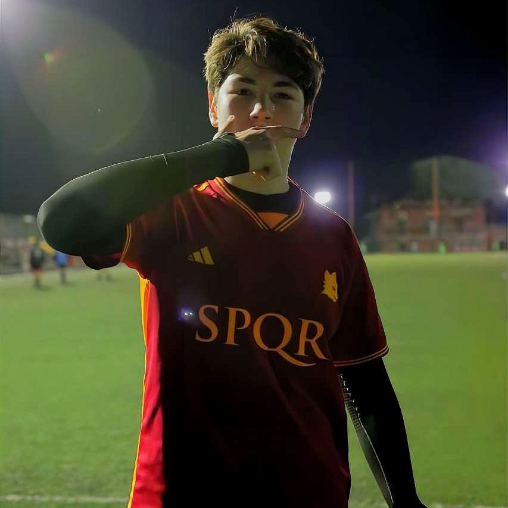

Calcio
Il calcio è la mia passione da sempre. Da quando ero bambino ho giocato a calcio e ho sempre ammirato l'AS Roma. Gioco come attaccante, cercando di emulare i miei idoli sul campo. Ogni partita è una nuova sfida e una possibilità di migliorare le mie abilità. Seguire l'AS Roma è parte integrante della mia vita, sento una connessione profonda con la squadra e non perdo mai una partita.
Videogame

I videogiochi sono un altro grande interesse per me. Mi piace immergermi in mondi virtuali, specialmente quelli legati al calcio e alle corse automobilistiche. Passo ore a giocare a giochi come FIFA per il calcio, Gran Turismo per le corse automobilistiche e Crash Bandicoot per divertirmi con una serie classica. Oltre al puro divertimento, trovo che i videogiochi siano un modo per sfidare la mia mente e rilassarmi dopo una lunga giornata.
Palestra

La palestra è diventata una parte fondamentale della mia vita negli ultimi anni. Mi alleno intensamente almeno quattro volte a settimana, concentrato sul raggiungimento dei miei obiettivi fisici. Ho sempre sognato di trasformare il mio corpo e la palestra mi offre l'opportunità di farlo. Grazie alla costanza e alla determinazione, sto finalmente vedendo i risultati che desideravo. Oltre al miglioramento fisico, trovo che l'allenamento in palestra mi dia una sensazione di benessere generale e mi aiuti a mantenere un equilibrio nella mia vita quotidiana.